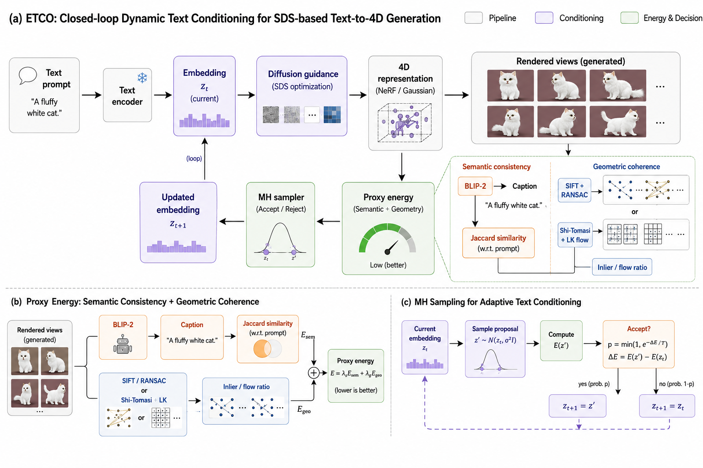
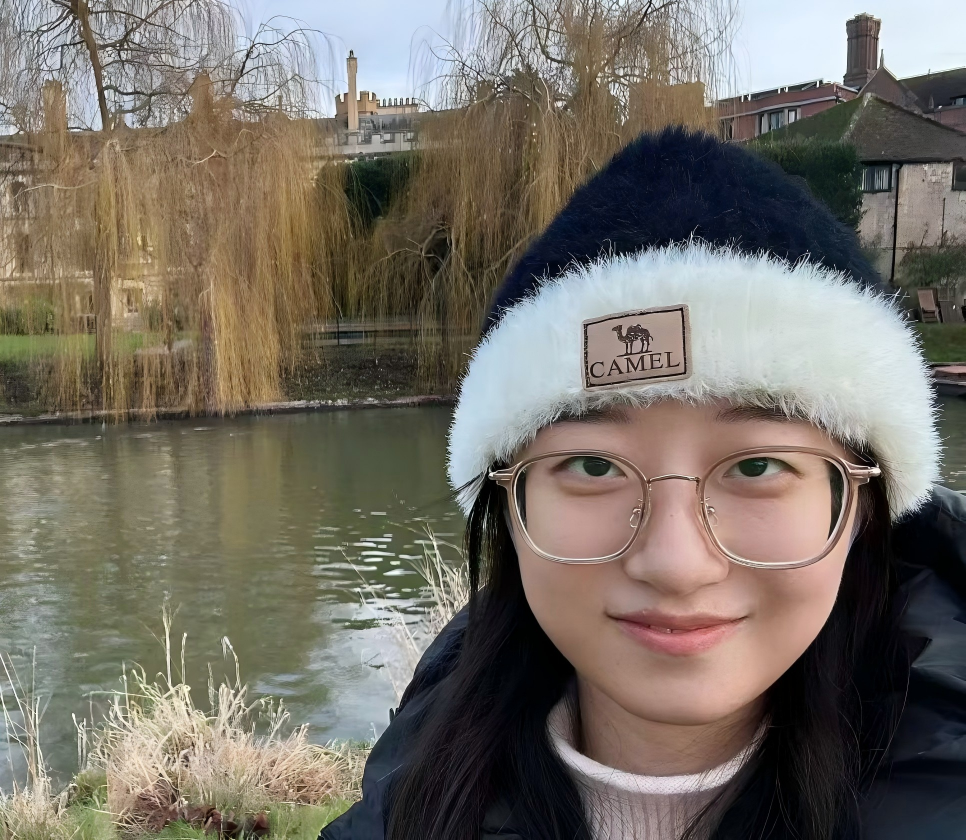
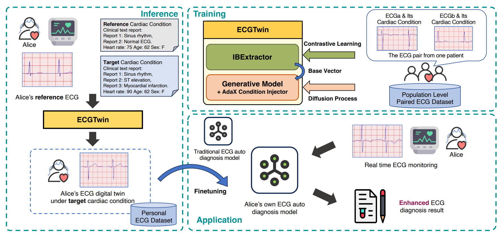
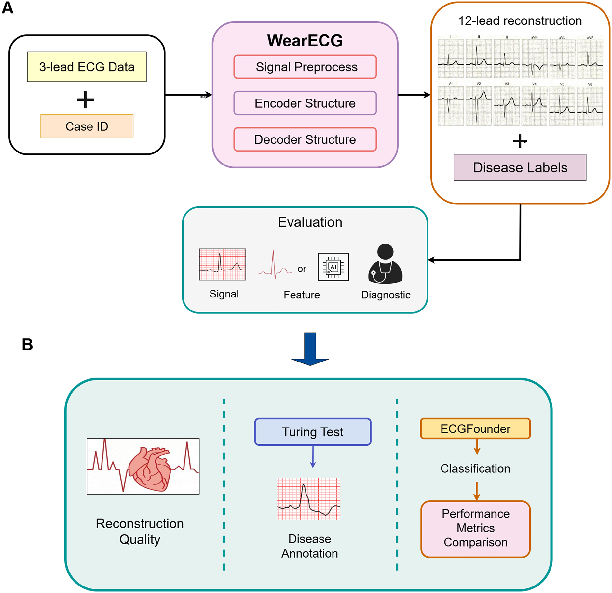

ETCO: Dynamic Text Conditioning for Text-to-4D Generation
Preprint, 2026

MSc Robotics and Artificial Intelligence
University College London
Generative AI · 3D/4D Reconstruction & Generation · World Models · AI for Science
I am an MSc student in Robotics and Artificial Intelligence at University College London. My research interests lie in learning, reconstructing, and generating representations of complex visual and physical worlds from limited observations. I am particularly interested in 3D/4D scene representations, generative models, video diffusion, and world models, with the broader goal of building models that can recover, represent, and simulate dynamic environments. I am also interested in extending these ideas to AI for Science and biomedical applications, including reconstruction and generative modeling of physiological signals.
I am currently seeking PhD opportunities for Fall 2027, with broad interests in generative models and computer vision.

Preprint, 2026

arXiv preprint arXiv:2508.02720, 2025
